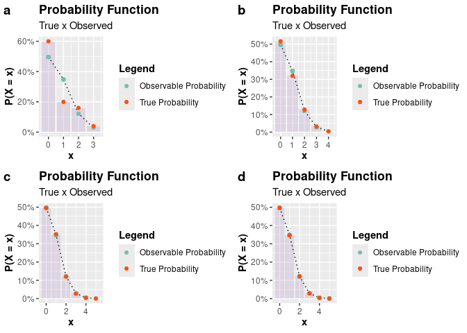
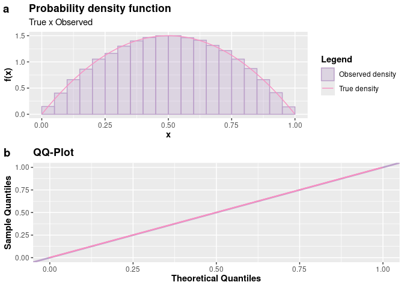

Generating pseudo-random observations from a probability distribution is a common task in statistics. Being able to generate pseudo-random observations from a probability distribution is useful for simulating scenarios, in Monte-Carlo methods, which are useful for evaluating various statistical models.
The inversion method is a common way to do this, but it is not always possible to find a closed-form formula for the inverse function of the cumulative distribution function of a random variable X, that is, q(u) = F−1(u) = x (quantile function), where F is the cumulative distribution function of X and u is a uniformly distributed random variable in the interval (0,1).
Whenever possible, it is preferable to use the inversion method to generate pseudo-random observations from a probability distribution. However, when it is not possible to find a closed-form formula for the inverse function of the cumulative distribution function of a random variable, it is necessary to resort to other methods. One way to do this is through the acceptance-rejection method, which is a Monte-Carlo procedure. This package aims to provide a function that implements the Acceptance and Rejection method for generating pseudo-random observations from probability distributions that are difficult to sample directly.
The package AcceptReject provides the AcceptReject::accept_reject() function that implements the acceptance-rejection method in an optimized manner to generate pseudo-random observations for discrete or continuous random variables. The AcceptReject::accept_reject() function operates in parallel on Unix-based operating systems such as Linux and MacOS and operates sequentially on Windows-based operating systems; however, it still exhibits good performance. By default, on Unix-based systems, observations are generated sequentially, but it is possible to generate observations in parallel if desired, by using the parallel = TRUE argument.
The AcceptReject::accept_reject() function, by default, attempts to maximize the probability of acceptance of the pseudo-random observations generated. Suppose X and Y are random variables with probability density function (pdf) or probability function (pf) f and g, respectively. Furthermore, suppose there exists a constant c such that
$$\frac{f_X(x)}{g_Y(y)} \leq c.$$
By default, the accept_reject function attempts to find the value of c that maximizes the probability of acceptance of the pseudo-random observations generated. However, it is possible to provide a value of c to the AcceptReject::accept_reject() function through the argument c, where Y is a random variable for which we know how to generate observations. For the AcceptReject::accept_reject() function, it is not necessary to specify the probability function or probability density function of Y to generate observations of X for discrete and continuous cases, respectively. For the discrete and continuous cases, Y follows the discrete uniform distribution function and continuous uniform distribution function, respectively.
Since the probability of acceptance is 1/c, the AcceptReject::accept_reject() function attempts to find the minimum value of c that satisfies the description above. Unless you have compelling reasons to provide a value for the c argument of the AcceptReject::accept_reject() function, it is recommended to use c = NULL (default), allowing a value of c to be automatically determined.
Installation
The package is being versioned on GitHub. You can install the development version of AcceptReject, and to do this, you must first install the remotes package and then run the following command:
# install.packages("remotes")
# or remotes::install_github("prdm0/AcceptReject", force = TRUE)
library(AcceptReject)The force = TRUE argument is not necessary. It is only needed in situations where you have already installed the package and want to reinstall it to have a new version.
Examples
Please note the examples below on how to use the AcceptReject::accept_reject() function to generate pseudo-random observations of discrete and continuous random variables. For further details, refer to the function’s documentation Reference and the Vignette.
Generating discrete observations
As an example, let X ∼ Poisson(λ=0.7). We will generate n = 1000 observations of X using the acceptance-rejection method, using the AcceptReject::accept_reject() function. Note that it is necessary to provide the xlim argument. Try to set an upper limit value for which the probability of X assuming that value is zero or very close to zero. In this case, we choose xlim = c(0, 20), where dpois(x = 20, lambda = 0.7) is very close to zero (1.6286586^{-22}).
library(AcceptReject)
library(cowplot) # install.packages("cowplot")
# Ensuring Reproducibility
set.seed(0)
simulation <- function(n){
AcceptReject::accept_reject(
n = n,
f = dpois,
continuous = FALSE,
args_f = list(lambda = 0.7),
xlim = c(0, 20),
parallel = TRUE
)
}
a <- plot(simulation(25L))
b <- plot(simulation(250L))
c <- plot(simulation(2500L))
d <- plot(simulation(25000L))
plot_grid(a, b, c, d, nrow = 2L, labels = c("a", "b", "c", "d"))
Generating continuous observations
To expand beyond examples of generating pseudo-random observations of discrete random variables, consider now that we want to generate observations from a random variable X‚ÄтຂÄÑùí©(Œº=0,œÉ2=1). We chose the normal distribution because we are familiar with its form, but you can choose another distribution if desired.
library(AcceptReject)
library(cowplot) # install.packages("cowplot")
# Ensuring reproducibility
set.seed(0)
simulation <- function(n){
AcceptReject::accept_reject(
n = n,
f = dnorm,
continuous = TRUE,
args_f = list(mean = 0, sd = 1),
xlim = c(-4, 4),
parallel = TRUE
)
}
# Inspecting
a <- plot(simulation(n = 100L))
b <- plot(simulation(n = 150L))
c <- plot(simulation(n = 250L))
d <- plot(simulation(n = 2500L))
plot_grid(a, b, c, d, nrow = 2L, labels = c("a", "b", "c", "d"))
The accept_reject() function supports, for the continuous case, specifying a base probability density function if you don’t want to use the continuous uniform distribution as the default base.
When choosing to specify another probability density function different from the uniform one, it’s necessary to specify the following arguments:
-
f_base: base probability density function; -
random_base: sampling from the base probability density function; -
args_f_base: list with the parameters of the base density.
By default, all of them are NULL, and the continuous uniform distribution in xlim is used as the base. If at least one of these arguments is not specified, no error will occur, and the continuous uniform distribution in xlim will still be used as the base.
For the discrete case, if the user mistakenly specifies any of these arguments, i.e., when continuous = FALSE, the accept_reject() function will ignore these arguments and use the discrete uniform distribution as the base.
If you choose to specify a base density, it’s convenient to inspect it by comparing the base density function with the theoretical probability density function. The inspect() function facilitates this task. The inspect() function will plot the base probability density function and the theoretical probability density function, find the intersection between the densities, and display the value of the intersection area on the plot. These are important pieces of information to decide if the base probability density function specified in the args_f_base argument and the value of c (default is 1) are appropriate.
Example of inspection
library(AcceptReject)
library(cowplot) # install.packages("cowplot")
# Ensuring reproducibility
set.seed(0)
# Inspecting
# Case a
a <- inspect(
f = dweibull,
args_f = list(shape = 2.1, scale = 2.2),
f_base = dgamma,
args_f_base = list(shape = 2.8, rate = 1.2),
xlim = c(0, 10),
c = 1.2
)
# Inspecting
# Case b
b <- inspect(
f = dweibull,
args_f = list(shape = 2.1, scale = 2.2),
f_base = dgamma,
args_f_base = list(shape = 2.9, rate = 2.5),
xlim = c(0, 10),
c = 1.4
)
plot_grid(a, b, nrow = 2L, labels = c("a", "b"))
Notice that considering the distribution in scenario “a” in the code above is more convenient. Note that the area is approximately 1, the base probability density function with parameters shape = 2.8 and rate = 1.2 provides a shape close to the theoretical distribution, and c = 1.2 ensures that the base density function upper bounds the theoretical probability density function. Therefore, considering f_base with Γ(α=2.8,β=1.2) and c = 1.2 is a reasonable choice for a base distribution.
Therefore, passing arguments to f_base = dgamma, args_f_base = list(shape = 2.8, rate = 1.2), and c = 1.2 to the accept_reject() function will lead us to an even more efficient code.
library(AcceptReject)
library(tictoc) # install.packages("tictoc")
# Ensuring reproducibility
set.seed(0)
# Não especificando a função densidade de probabilidade base
tic()
case_1 <- accept_reject(
n = 2000,
continuous = TRUE,
f = dweibull,
args_f = list(shape = 2.1, scale = 2.2),
xlim = c(0, 10)
)
toc()
#> 0.009 sec elapsed
# Specifying the base probability density function
tic()
case_2 <- accept_reject(
n = 2000,
continuous = TRUE,
f = dweibull,
args_f = list(shape = 2.1, scale = 2.2),
f_base = dgamma,
random_base = rgamma,
args_f_base = list(shape = 2.8, rate = 1.2),
xlim = c(0, 10),
c = 1.2
)
toc()
#> 0.006 sec elapsed
# Visualizing the results
p1 <- plot(case_1)
p2 <- plot(case_2)
plot_grid(p1, p2, nrow = 2L)
Notice that the results were very close in a graphical analysis. However, the execution time specifying a convenient base density was lower for a very large sample.